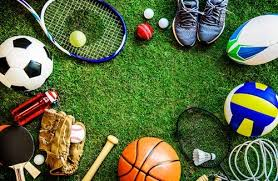

Меню
- Плавання
- Віндсерфінг
- Американський
футбол
- Лижні перегони
- Фігурне катання
|
Що таке спорт?
Спорт – це організована по певним
правилам діяльність людей, з метою вдосконалення та співставлення
своїх фізичних або інтелектуальних здібностей, а також підготовка до
цього співставлення та міжособистісні стосунки виникаючі в процесі
підготовки. (джерело вікіпедія)
Під словом підготовка
мається на увазі процес тренувань а під словом співставлення
змагання.
Перш за все хочу сказати що поняття спорту
неможливо вписати у кілька рядків тексту, тому що спорт “із
середини” має багато різних ознак, які неможливо пізнати людині яка
не є спортсменом. Для кращого сприйняття тексту, я буду
використовувати наступний список. 
|
Позитивні властивості спорту (непрофесійного)
- заняття спортом знімає стрес та нервове напруження. У всіх
людей, в результаті нашої суспільної життєдіяльності, в
незалежності від роду заняття, накопичується негативна енергія
(гнів, стресс), яку потрібно періодично знімати, для того щоб не
поїхала криша.
- спорт позитивно впливає на наше здоров’я. Існує вислів, “в
наш час здорових немає, є недообслідуванні”. Так от спорт може
вирішити цілий спектр проблем із здоров’ям, це зайва вага,
недостатня вага, поганий імунітет, проблеми із опорно-руховою
системою, та багато інших.
- спорт робить вас фізично привабливішими. Це може допомогти
кожному у жорсткому процесі природнього відбору)).
- заняття спортом призводять до утворення нових знайомств.
Коли вам бракує уваги та спілкування, ви можете просто піти на
тренування і поспілкуватися із іншими спортсменами. Тим більше шо
в час розквіту соціальних мереж, людям справді бракує живого
спілкування.
- заняття спортом не потребують значних фінансових вкладень.
Спорт ще можна назвати – дешевим рішенням.
|
Негативні сторони спорту (непрофесійного)
- несумісність із змінами у способі життя сучасних людей. З
розвитком технологій людина все меньше і меньше напружує свої
частини тіла, тим самим стає дуже лінивою істотою. А спорт вимагає
хорошої віддачі у фізичному і психологічному плані, і цим він
суперечить тенденціям до глобального олінивлювання суспільства.
Якщо спорт втарчає популярність, то це не спорт стає гіршим а люди
стають лінивіші.
- спорт це ризик. Заняття спортом не завжди приводять до
бажаних результатів, у спорті бувають травми, у спорті бувають
розчарування а також неправильне занняття та відношення до спорту
це пуста втрата часу.
|